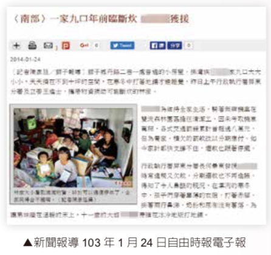

行政執行績效報告與策進作為
執行有愛
公義無礙
紀念郵冊
關懷弱勢案例
指標性案件
從心出發
舉報有賞

嚴打老虎
成果豐碩


設計師久違的微笑
臺北分署
室內設計師小傑因遭好友陷害，導致辛苦成立的公司倒閉又積欠稅款及民間債務，為了還債甚至借了高利貸，在惡性循環下，小傑每天過著足不出戶、毫無安全感的生活，臺北分署除命小傑至分署報告公司財產狀況外，並至小傑家中訪視，發現小傑並非無工作能力，僅對未來失去信心及感到失望與無助，該分署知道要徵起本件欠稅，首先要打破小傑的心防，主動付出關懷、給予溫暖的鼓勵，經過幾次訪談後，小傑慢慢回復對設計的熱忱與內心的溫暖，並同意接受該分署轉介就業服務，協助重返職場，積極處理欠稅，使行政執行機關達到「公義」與「關懷」雙贏的局面。
一家9口年前臨斷炊，分署拋磚引玉展關懷
屏東分署
排灣族林姓義務人一家九口天天擠在不到十坪的空間，在寒冬中打著地鋪才能睡覺，林姓義務人更為了維持全家生計，冒險無照騎乘無牌機車擔任清潔工工作，累計滯欠各種交通違規罰鍰超過八萬元，但為養家，積欠的罰款僅能申請以分期繳納，如今家計都快支撐不住，還款也跟著停擺。屏東分署於執行過程中得知義務人困境後，全體同仁發動募集物資，並結合百合扶輪 社等民間團體傳遞關懷與愛心，帶著白米、尿布、新衣服、玩具、書籍及文具等，讓義務人過年不致斷炊;由於屏東分署寒冬送暖活動、會並有一技之長。行政執行機 關往往在個案執行中，對於隱 藏於社會角落未被發現的弱勢 民眾，在缺乏資源管道或求助無門之當下，盡微薄之力，即時提供協助走出困境。
媒體追逐的董事長
士林分署
 義務人孫○存滯納88、89年度贈與稅及其罰鍰，及93年度綜合所得稅，合計滯欠金額為3億27萬8,419元，移送機關財政部臺北國稅局於94年9月間移送臺北分署執行，嗣因轄區調整，於95年初移由士林分署接續執行。
義務人孫○存滯納88、89年度贈與稅及其罰鍰，及93年度綜合所得稅，合計滯欠金額為3億27萬8,419元，移送機關財政部臺北國稅局於94年9月間移送臺北分署執行，嗣因轄區調整，於95年初移由士林分署接續執行。
本件於收案後即執行義務人存款、薪津及投資股票等財產，且併法院執行不動產，惟其名下財產顯不足清償，不動產亦無人應買。該分署除依職權調查義務人財產外，並多次通知義務人到場報告財產狀況，惟義務人僅願每月自動繳納25萬元，是該分署即積極調查義務人之資金流向及資產變動情形，以明其是否有隱匿或處分財產之情事，擬以聲請管收之間接強制方法促使義務人履行義務。
該分署調取義務人歷年之財產及所得資料，且因義務人之投資變動及資金往來情形複雜，是該分署即請財政部臺北國稅局指派專業稅務人員協助調查，經調閱義務人投資公司之股份異動紀錄、關係人近數年之財產及所得資料、高額抵押貸款資金流向等，並派出數組人員至金融機構調查義務人及關係人資金往來紀錄，就查得之資料共同彙整比對後，發現義務人可能有涉及隱匿或處分財產之情事，是該分署即通知義務人到場說明。詢問當日，該分署請義務人就異常之資金變動提出說明，並曉諭其如涉有隱匿處分財產或虛偽報告之情事，則將向法院聲請管收，歷經6小時之詢問，終於促使義務人於當日繳納1億元，其餘款項則申請分6期繳納，並由有資力之第三人出具擔保書，嗣義務人依分期約定如期履行，於99年3月21日繳清全部稅款，本件終於全數徵起。
本件義務人曾擔任上市公司之董事長，廣為一般民眾認識，被媒體批露其滯欠上億稅款卻仍住豪宅且偕妻子購買精品等奢侈行為，致全民輿論一致撻伐，報章媒體大肆報導，該分署亦承受相當之壓力，然該分署趁此時民氣可用，就前已蒐集掌握之義務人資金變動相關資料，適時出示證據詢問義務人，並告以該分署聲請管收之決心，以此契機，終能促使義務人提出清償方案履行義務。本案除幫國庫挹注3億餘元之執行金額外，亦因此案而促使行政執行法增訂第17條之1有關禁奢條款之規定，使我國行政執行機關多了 可資運用之執行方法;又因本案義務人之資金 流向複雜，該分署請國稅局指派稅務人員協助追查，亦發揮具體成效，是促使財政部與法務部於99年度欠稅移送執行案件業務聯繫會議中，共同訂定「強化稅捐稽徵機關與行政執行機關執行案件追查具體措施」，就大額欠稅案件或社會關注而具指標性意義之執行案件，得依實務需要由稅捐稽徵機關指派人員協助追查，建立行政執行機關與稅捐稽徵機關合作追查執行案件之具體規範，以活化執行技巧，使稅捐案件之執行更能發揮成效。